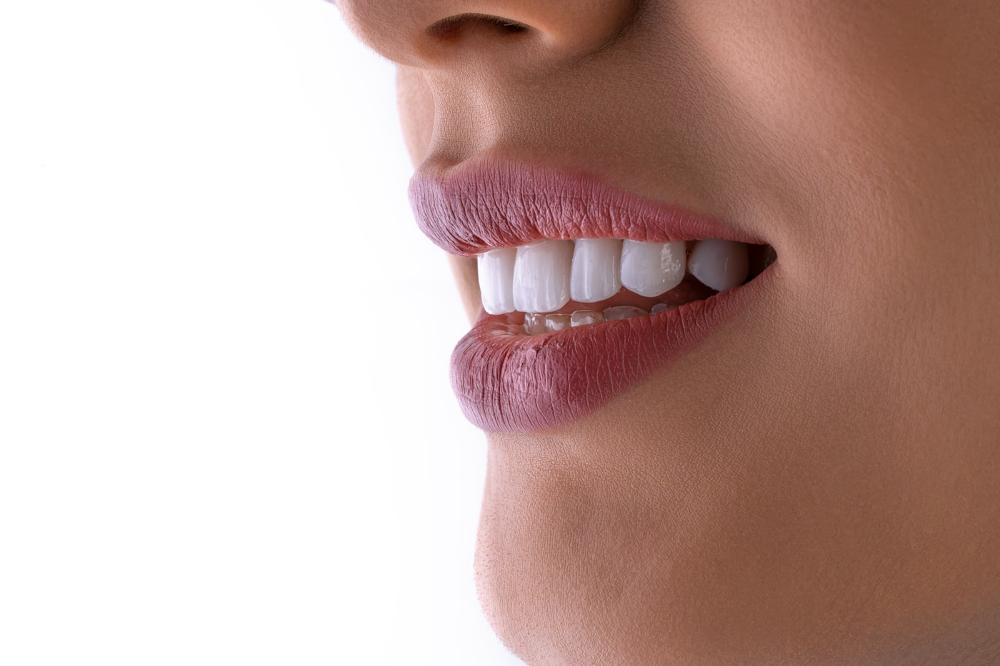

Descubre Cuánto Cuesta Realmente un Tratamiento Dental — Antes de Necesitarlo
Nadie quiere descubrir que su plan dental «cubierto» apenas cubre nada. Pide presupuestos reales de seguro dental y ve las cifras reales desde el principio.
Sin agobios, sin favorecer a ninguna aseguradora — solo presupuestos reales explicados con claridad.

Por Qué Elegir Confialy para tu Seguro Dental
El seguro dental tiene sentido si quieres revisiones y limpiezas rutinarias sin factura sorpresa, o si tienes un tratamiento a la vista (coronas, ortodoncia) y quieres saber el coste real antes de decidir. Encaja menos si casi no vas al dentista y solo buscas cobertura de urgencias — en ese caso el extra dental básico de un seguro de salud general puede ser suficiente.
Comparamos planes dentales independientes, no solo lo que viene incluido en una póliza de salud.
Precios reales, uno junto a otro — ve lo que pagarías de tu bolsillo frente a con cobertura.
No te empujamos a combinar planes si lo independiente te sale mejor.
¿Para Quién Es el Seguro Dental?
Quieres limpiezas y revisiones rutinarias cubiertas sin una gran factura anual.
Tienes un tratamiento dental a la vista y quieres comparar el coste antes de decidir un plan.
Estás comparando un plan familiar y quieres que todos queden cubiertos en una sola póliza.
¿Qué Cubre el Seguro Dental en España?
- Revisiones y limpiezas rutinarias. Normalmente una o dos revisiones anuales más una limpieza profesional, a menudo sin coste adicional.
- Radiografías y diagnóstico. Radiografías dentales estándar necesarias para planificar el tratamiento.
- Empastes básicos. Tratamiento de caries en dientes naturales, normalmente cubierto al 100% o casi.
- Urgencias dentales. Alivio del dolor y tratamiento urgente ante infecciones o accidentes, normalmente con cita garantizada en pocos días.
- Endodoncias y extracciones. Suelen facturarse con un copago fijo en lugar de ser gratuitas, a diferencia de los empastes simples.
- Tratamiento de encías (periodoncia). Limpieza en profundidad y tratamiento periodontal, a veces limitado o excluido en los planes más básicos.
- Odontopediatría. Revisiones infantiles y selladores preventivos, normalmente incluidos sin coste en los planes familiares.
- Descuento en ortodoncia. Un porcentaje de reducción en brackets o alineadores — rara vez cobertura completa.
- Tratamientos mayores (implantes, coronas). Normalmente un descuento, no cobertura completa — confirma el porcentaje real antes de asumir que está incluido.
Conviene revisarlo antes de comprar
Si «descuento» significa realmente una reducción relevante, o un simbólico 5-10% que apenas cambia la factura.
La cobertura, los límites y las exclusiones exactas dependen de la aseguradora y el plan que elijas — las condiciones completas de la póliza se muestran antes de comprar.
Cómo Pedir tu Seguro Dental en 4 Pasos
Cuéntanos qué necesitas
Un mensaje breve a través de nuestro formulario — sin obligación de compra.
Comparamos presupuestos reales
Revisamos ofertas de varias aseguradoras en tu nombre.
Tú eliges el plan
Te explicamos las opciones en lenguaje claro. Sin empujarte hacia ninguna aseguradora.
Te ayudamos a quedar asegurado
Seguimos en contacto hasta que tu póliza esté activa.
Preguntas Frecuentes sobre el Seguro Dental en España
¿Merece la pena el seguro dental si solo necesito limpiezas?
Depende de cuánto vayas al dentista y de lo que pagarías por visita sin cobertura — te mostramos las cuentas reales para que no tengas que adivinar.
¿Puedo añadir cobertura dental a un seguro de salud en vez de contratar uno aparte?
Algunas aseguradoras lo ofrecen — te mostramos ambas opciones para comparar el coste real, no solo la comodidad.
¿Los tratamientos estéticos como blanqueamiento o carillas están cubiertos?
Rara vez por completo — la mayoría de planes ofrecen un descuento en lugar de cobertura total. Lo señalamos claramente para que no sea una sorpresa en la consulta.